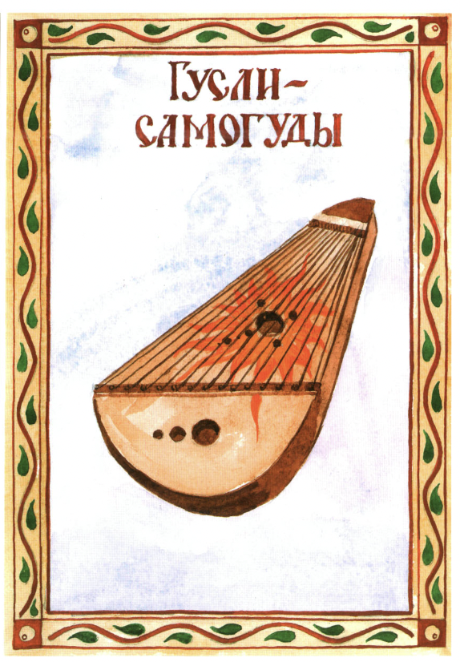
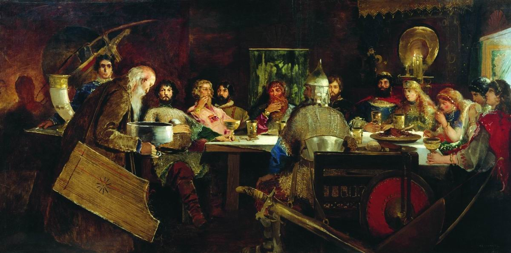

Fig.1 - Self-Playing Gusli is a magic object in Russian folk tales.
Gusli is the oldest East Slavic multi-string plucked instrument, belonging to the zither family, due to its strings being parallel to its resonance board. Its roots lie in Novgorod, the merchant republic in Eastern Europe. Gusli is invoked in warrior epics about Prince Vladimir and Ilya Muromets.

Fig.2 - Feast at Prince Vladimir's Court. Artist Andrei Riabushkin (1888). Note the gusli player entertaining the prince and the warriors.
Clip 1. Musician Kirill Bogomolov. He is performing at Kizhi open air museum in Northern Russia.